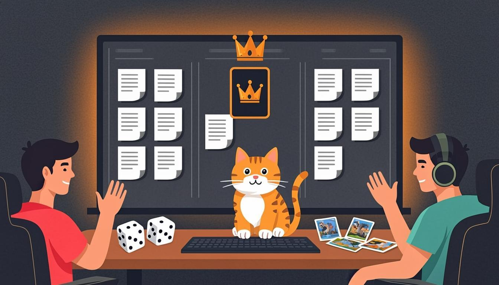

Warm-up
10 mincats · funny bugs · the 6 a.m. marathon🎧 Listen to the questions
❓ Three questions — click a card to open the sentence starters
Listening — The Scenario Game Night
10 minaudio + comprehension
🧩 Before you listen: 10 key words
Click a word — a definition and an example will open. The Russian gloss is there to check your understanding. Listen to the recording of all ten words.
🎧 Track 1 — The Scenario Game Night
🌍 Extension — TED-Ed: Why do cats act so weird?
From the yearly plan: Why do cats act so weird? — Tony Buffington ↗
Task: what rules of cat behaviour does the video explain? Rebuild 2 facts as zero conditionals: If a cat blinks slowly, it means trust.
Reading — The Cat QA Fact File
8 minlaws of cat behaviourHarbour Lights Wiki · Page 20: Cat QA — the fact file
Category: office wildlife · Owner: everyone · Status: scientifically verified (see the TED-Ed video above)
Our cats are not a distraction. They are a quality-control department with its own laws.
1. If a cat blinks slowly at you, it means trust. Blink back — this is the office etiquette.
2. If the keyboard is warm, a cat will sit on it. Physics beats productivity, every time.
3. If Lag runs at six in the morning, the whole house wakes up. There is no off switch.
4. If a cat brings you a toy, do not refuse it. Refusal has consequences.
5. If the demo starts, Boss appears. She does not know the word "rehearsal".
6. If you respect the cat's schedule, the cat respects yours. Rarely, but it happens.
🌍 Extension — News in Levels
From the yearly plan — pick a level-3 tech news: newsinlevels.com ↗
Task: read the story twice (level 1 and level 3) and compare the language. Say one zero and one first conditional about the news.
Grammar Review — One Board, Three Tools
8 minthe student explains first⚙️ The consolidation matrix
| When you mean… | Take… | Example |
|---|---|---|
| A law of nature, a game rule, a process | ZERO CONDITIONAL | If the player falls, the screen fades. |
| A plan with a consequence (this release, this week) | FIRST CONDITIONAL | If QA approves, we will ship on Friday. |
| A direct instruction | IMPERATIVE | Open the build. Do not touch the database. |
| Insurance, prepared in advance | IN CASE | In case the store page breaks, the rollback stays ready. |
| The opposite condition | UNLESS (= if not) | Unless the servers hold, we will postpone. |
| An instant trigger | AS SOON AS | As soon as the trailer drops, I will post it. |
🎬 Video — BBC Learning English: What is a conditional? (Conditionals with Georgie)
🔊 Shadowing — speak along with the speaker
Track A — laws and plans mixed, Track B — instructions and insurance. Listen to a sentence → repeat it out loud in the pause. Two loops per track.
Speaking Challenge — the Scenario Game
15 min8 cards · 2-minute role-play · autocorrect🎙 Round 1 — The Scenario Game 8 cards
Open a card, read the situation, and answer three times: the rule (zero), the plan (first), the instruction (imperative). The model answers open on click — but say yours first.
🎙 Round 2 — Stakeholder Call 2 minutes, all conditionals
Explain to a worried client what happens if the release is delayed: the scenarios, the safety nets, the new date. Two minutes, every sentence a conditional or an instruction — this is the plan's role-play.
🩹 Round 3 — Autocorrect (the plan's error list)
Five sentences with the module's classic mistakes. Correct each one out loud — by ear first, then check the card.
Module Test 5 — 15 minutes
14 items + 1 speaking taskno peeking at the rules🎙 Part 4 — Speaking: "Continue the rule of the game" (record it)
Three prompts. For each: say one or two full sentences — a rule, a plan or an instruction — then click the card to compare with the model.
Homework
≤ 30 minutes in total🧑🏫 Teacher notes
Goal: consolidate and measure the module: the student reacts to live situations with the right tool (law / plan / instruction / insurance), fixes the classic errors by ear, then passes the 15-minute test without looking back.
Suggested flow: Warm-up: the cat questions; collect one law, one plan and one instruction per answer → Listening: the scenario game night; extract the triple-answer structure → Reading: the cat fact file rebuilds facts as laws → Grammar: the student draws the matrix BEFORE opening it; the video gives the whole family in five minutes → Speaking: Round 1 is the module's key drill (8 cards, triple answers) → Test: one sitting, note weak spots for Module 6.
Success criteria: the scenario game — 8 cards with the triple answer and ≤3-second starts; the stakeholder call — 2 minutes, no Russian hesitations; the test — 70%+ overall.
After the test: Part 1–2 below 60% → Lessons 17–18; Part 3 → Lesson 19. The full error review happens at the start of Lesson 21.
Threads: the rollback drill from Lesson 17 opens card one; Boss the cat closes the listening story — and, per the fact file, will also attend the demo in Module 6; the stakeholder call rehearses the "explaining delays" skill that returns in Module 9 (reported speech); Module 6 reopens "if" for unreal worlds: second and third conditionals, wish and if only.